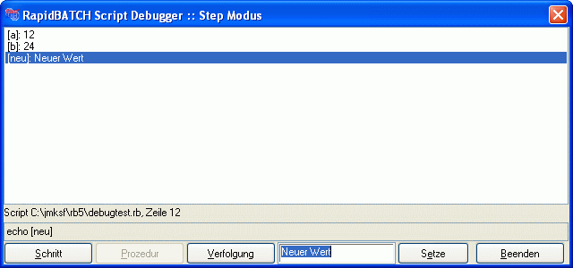

DEBUGVARS
DEBUGVARS
DEBUGVARS
DEBUGVARS
| Syntax: | DEBUGVARS var1,var2,var3 ... varn DEBUGVARS Modus |
| Beschreibung: | Fügt die in einer Variablenliste angegebenen Variablen zum Debug-Dialog hinzu, um diese zu beobachten bzw. zu bearbeiten/modifizieren. Alle Variablen müssen durch Kommata (,) voneinander getrennt sein. Anstatt einer Variablenliste sind auch die zwei Werte AUTO und NONE möglich. AUTO fügt jede neu deklarierte Variable automatisch zur Beobachtung dem Debug-Dialog hinzu, NONE schaltet diese Option wieder aus.  |
| Beispiele: | debugmode step rem Nur [a] und [b] überwachen debugvars [a], [b] [a] = '12' [b] = [a] * '2' [c] = [a] * [b] rem Automatisch alle neu deklarierten Variablen hinzufügen debugvars auto [neu] = 'Neuer Wert' echo [neu] |
| Bemerkungen: | Diese Anweisung ist nur im Interpreter der RapidBATCH Professional Edition enthalten. DEBUGVARS wird vom Compiler ignoriert und ist nicht in compilierten Programmen verfügbar. Sie können mit der Umgebungsvariablen RB_DEBUGVARS vor dem Starten des Interpreters bereits zu beobachtende Variablen festlegen. Möglich sind die selben Parameter/Werte wie bei DEBUGVARS. |